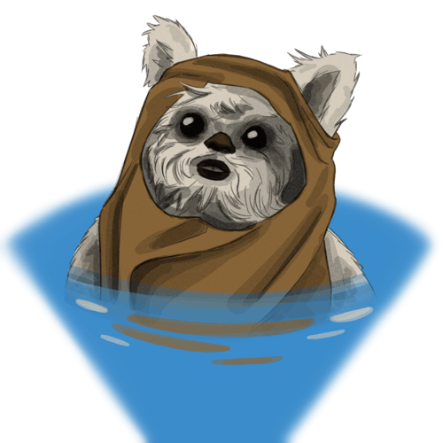

Ewok
Small and resourceful, Ewoks are brave warriors and compassionate companions who cherish their close-knit communities. Their unassuming appearance hides their keen instincts and persuasive charm. Ewoks thrive in primitive environments, using their wit and determination to overcome challenges and protect those they hold dear.
Ewok Traits
Ability Scores
Your charisma and dexterity scores increase by 1.
Age
Ewoks are considered adults at 14-29 and typically live 60+ years.
Alignment
Ewoks usually favor Good due to their nature of wanting to fight back for what they think is right.
Size
Ewoks are 3-4ft tall.
Movement
Ewoks have 30ft of movment speed.
Languages
Ewoks speak Basic and one other language of your choice
Fuzzy Bear
Gain proficiency in persuasion, if you already have proficiency then gain expertise.
Primitive Conditions
Gain proficiency in nature and survival. Additionally, gain advantage on checks related to flora or fauna.